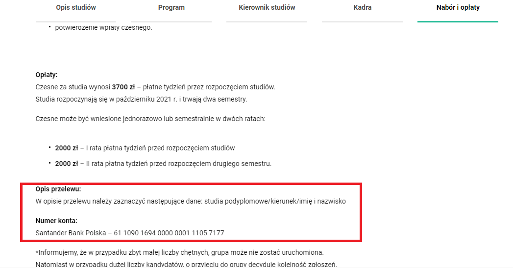

Opłaty
Termin i formy pobierania opłat za studia podyplomowe
- Wejdź do zakładki ‘Nabór i opłaty’ wybranego kierunku studiów podyplomowych
- Wybierz formę płatności – w jednej lub dwóch ratach
- Na podany numer konta bankowego dokonaj przelewu, opisując go uważnie, zgodnie z podaną informacją tuż nad numerem konta 
- Potwierdzenie przelewu w pdf prześlij na adres studiapodyplomowe@vistula.edu.pl, nie wcześniej niż tydzień przed potwierdzonym przez pracownika Działu studiów podyplomowych, rozpoczęciem edycji wybranego kierunku studiów podyplomowych
- Dodatkowo, wraz z potwierdzeniem przelewu możesz wysłać prośbę o wystawienie faktury oraz prośbę o wystawienie zaświadczenia o przyjęciu na studia podyplomowe, a także dokument np. z Urzędu Pracy do wypełnienia przez uczelnię, jeśli studia mają zostać sfinansowane (w części lub w całości) przez Urząd Pracy lub inną instytucję